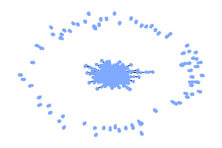

In this project we will take a look at the 1000 most popular movies from the past 10 years.
The dataset is available on this link.
The project is devided into two main sections:
In order to conduct our investigation, first we have to understand the structure of the dataset.
It stores the following 12 attributes of the 1000 movies:
One example looks as follows:
For the sake of this part of our analysis we will concentrate on the following attributes:
With these information at hand, our two main questions are:
To answer this question we used the available data to create a graph that represents the relationship between the individuals who were involved with each movie.
This social graph is created so that every person (actor/director) represents a node and two people are connected with an edge if they worked together on a movie.
(The data preparation process and detailed analysis can be found in the IPython notebook.)
Using NetworkX to plot the network we get a very centralized structure:

Just by looking at it with naked eye, no dominant elements can be identified.
To make a thorough analysis, we have to start at the basics stats of the network:
The shape of the degree-distribution looks just like a real network's, as expected.
Now we can find the TOP 10 people with the most connections.
Crime data from 2003
This barchart visualization should also pull data from an associated CSV/JSON file. Here, Once again, you should use appropriate dynamic
scales (see chapter 7 of IDV). Additional requirements for the visualizations are listed below
Historical data for Assult
For this final sub-assignment we will visualize your results from the KK-means exercise from week 5.